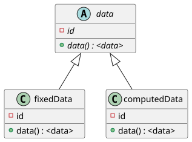
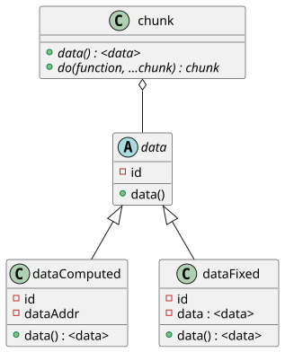
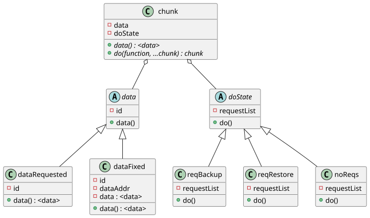
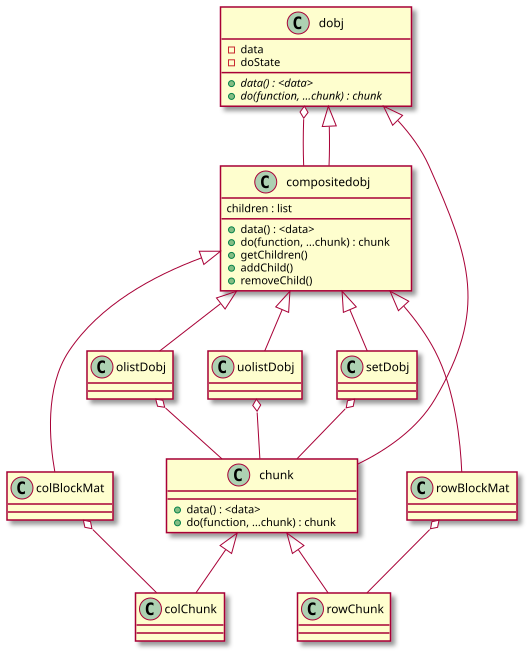

2021-08-10
Over the course of extensive prototyping, testing, and research towards the construction of an R-based distributed system for large-scale statistical modelling, the “chunk” concept has been imperative to intuitive and clean usage of the system. This document outlines the “chunk”, including underlying theory and implementation suggestions.
The term “chunk” is used here to refer to discrete portions of data that may be distributed across computing nodes. It has its concrete realisation in object-oriented terms as some instance implementing the interface of a “chunk” type, with further details in sec. 2.
The provenance of the concept can be found in many programs operating with distributed partitioning schemes, including MySQL Cluster and the Hadoop Distributed File System [1], [2].
The chunk as a type has at minimum two operations for its interface: data(), and do(), as shown in tbl. 1. These correspond to access and execution on an abstract chunk, where data() returns the underlying data encapsulated by the chunk, and do() takes a function and a variable number of chunk arguments, returning a chunk representing the result. do() and data() are intimately cohered, in that the data() function must be called at some point to access the underlying data for the actual calling of whatever function is given to the do() function, and the result of the do() operation can be accessed only through data().
| Responsibility | Operation | Return Type |
|---|---|---|
| Data access | data(chunk) |
<data> |
| Execution on Data | do(function, ...chunk) |
<chunk> |
The implementation of such an interface strongly depends on the fact that the data underlying a chunk may be in one of several different states.
Most notably, an instance of a chunk may be returned by do(), whose underlying data may still be computed either concurrently, or at some point in the future; the limitation of present data availability has purposely not been placed, in order that concurrent operation scheduling may be dynamic. With this in mind, the chunk will adopt different behaviours internally depending on the status of the data; for example, data that is still being computed will not allow immediate access via data(), and may require communications set up in order to be transferred, while fixed and pre-computed data may be immediately accessible or even cached locally.
A simple subclassed form of this particular implementation is given in fig. 1.

This meets the Liskov substitution principle[3], however doesn’t retain flexibility for other forms of state; here the whole of the chunk object’s state is not satisfactorily captured entirely by the chunk – there may be other aspects of state, such as a command history, last cache, or others, that would demand subclasses for consistency, yet lead to a multiplicative proliferation of subclasses if implemented.
Therefore, an alternative is presented, wherein the data state is delegated and thereby encapsulated, as given in fig. 2. Assuming there is some set of mutually exclusive state spaces S, each containing some set of states NS, the growth of required subclasses to capture interacting state is given by 𝒪(∑SNS)!, whereas delegation leads to growth proportional only to the number of state spaces, at 𝒪(S).

An example of additional states to motivate the need for multiple forms of state-capture is given in the following example: In the service of data resiliance in the face of likely machine failure, the underlying data on the machine can be written to disk and restored following failure. Assuming immutability of the data, once it has been written, it has no need to be re-written. The only data that requires writing is that resulting from operations on the original data. Imagining a log is held of data operations, with one datum resulting in another through some operation, long chains of parent-child data may be created. Depending on the granularity, portions of these chains may heuristically be skipped for writing to disk, in order to save time, where minimisation of disk write time is to be balanced by the probability of machine failure over the time spent performing operations. The maintenance of a command history and current state of storage of data, may be captured in the chunk by another form of state, which can separately trigger further disk writes. This is depicted in fig. 3

With respect to all of the class descriptions, this remains only a general description of the architecture; non class-based approaches that still follow a similar pattern of delegation may very well be preferable, especially given that the language of choice for implementation is , which possesses many dynamic features that can substitute for these state object compositions, such as closures as part of higher-order functions.
The value of distributing objects across machines finds greater value when an object larger than the memory limits of any remote machine can be split up into multiple chunks that each hold some constituent portion of the underlying data. The notion of a composite chunk is therefore introduced, in order to capture the idea of an object being composed of multiple chunks. This is equivalent in many respects to the distributed object as used in earlier prototypes, but serves a far more general role.
A composite chunk is a special type of chunk that possesses an ordered list of children, and can therefore be recursively composed in a tree structure. Methods for combination of children, which either overrides the data() method or is delegated thereto, would be required. It is conceivable that the same could be required of the do() method, where different representations of chunk composition would alter standard requested functions. Example variations of composite chunks include row-block matrices, column-block matrices, ordered lists, unordered lists (sets), etc. The implementation of a new composite chunk can involve the creation of a new subclass of composite chunk, and perhaps some subclass variation of an atomic chunk.
The flexibility granted by such variations in composition allow for greater matching of data structures to parallel statistical procedures. The simplest example is given by blockwise parallel matrix multiplication, but more advanced statistical procedures possess various parallel data structure mappings. For instance, it has been shown that least squares can be made very efficiently parallel by decomposing the XTX matrix by columns into disjoint blocks [4]. This can be contrasted with the row-wise splitting that has found success in GLMs and GAMS as special cases of non-linear optimisation [5]. Multi-chain MCMC methods can also benefit from parallelisation, with each chain being run in parallel, though no special ordering need be defined on each chain [6]. A variety of other parallel and distributed statistical procedures with mappings to composite chunk structures have further derivations, most being well-served by variations on the composite chunk[7].
Chunk aggregation through composite chunks exists as an interaction layer above raw singular chunk manipulation. Type safety is added through supplemental child manipulation methods, though this is exists in tension with the aim of a uniform interface, and whether the child manipulation methods exist in the compositeChunk class or the abstract chunk class determines the balance of favour. An example implementation of a simple family of composite chunks is given in fig. 4. Conceivably, further layers may be added to hide details such as the blocking format of matrices, allowing clients to only be concerned with matrices qua matrices.
